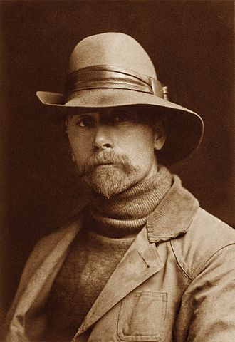
Portrait of Edward S. Curtis
Edward Curtis (1868 - 1952) captured the lingering heritage of Native Americans. His work is seen as important, rather pure and iconic.
This (unusually long) gallery tells the history of Native North America with the help of Curtis' photography
Canyon de Chelly (Curtis)
This image includes members of the Navajo tribe roaming an Arizonan canyon in 1904.
The Navajo are one of America's most famous tribes (example on next slide)
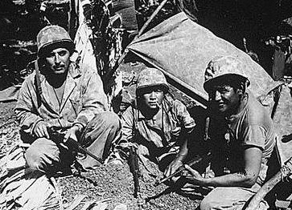
Navajo Code Talkers
In World War two, the Navajos and their language served as backbone to US encryption in the Pacific.
Because their language was undocumented, radio traffick Code Talkers proved indecipherable to the Japanese
Code Talkers by Chester Nez
A Great book written by a veteran Code Talker.
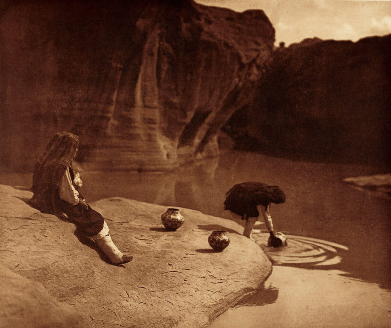
Acoma Sioux well (Curtis)
Women of the
Acoma Tribe (New Mexico) getting water by an old well.
These are the Pueblo natives, who dwelled in houses (next image)
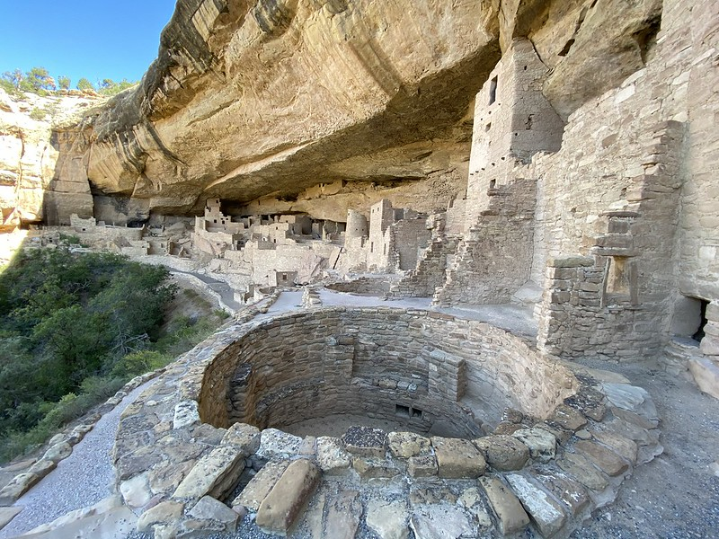
Pueblo houses
The Pueblo (New Mexico and Arizona) were not nomadic like most other tribes, but built their own houses and facilities.
The flat roof was sometimes used to dry vegetables and other foods.
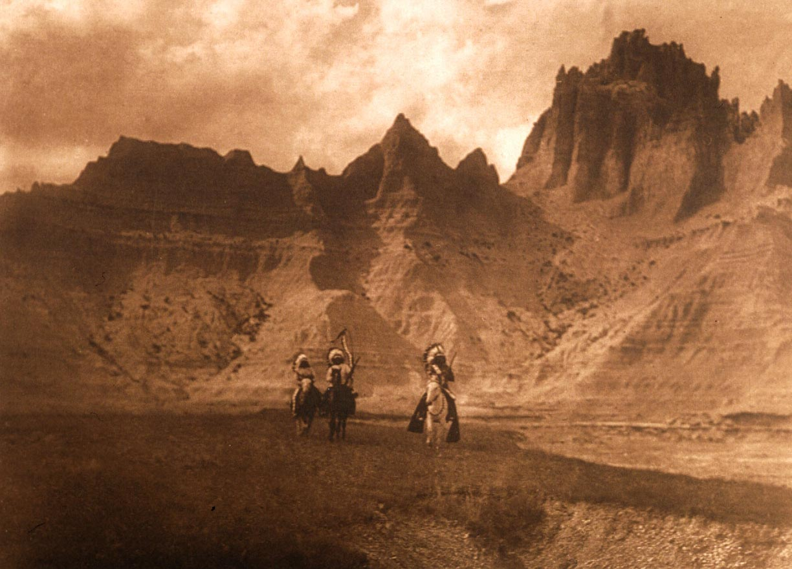
Sioux riding the badlands (Curtis)
'The badlands' was an inhospitable area in Sioux territory (North & South Dakota).
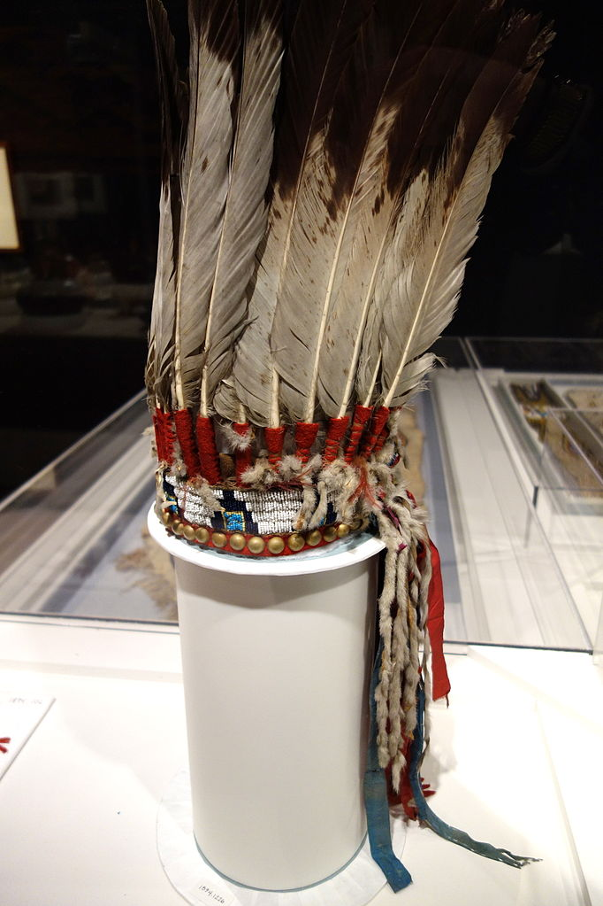
A War Bonnet
The riders on the previous image wore a headress made of eagle feathers. The war bonnet is the sign of a formidable warrior.
In most tribes, warriors earned a single feather for acts of pure, untamed courage.
To collect a headband full of feathers means the warrior is examplary and worthy to lead.
Another War Bonnet Carier(Curtis)
Another example of a war bonet.
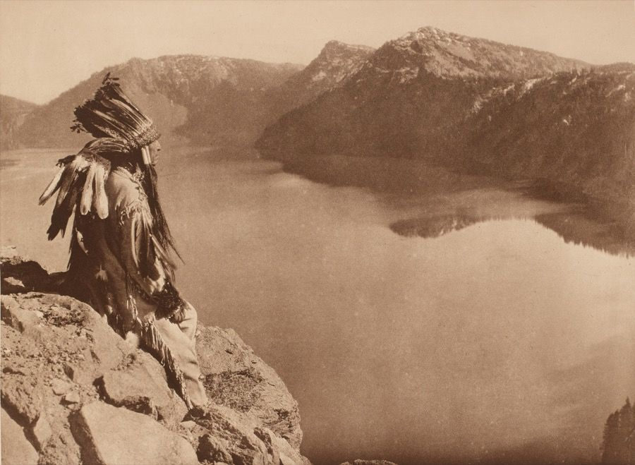
The last of a generation (Curtis)
A Native American in deep thought, while looking over his ancestral land.
When Curtis shot his photographs (around the year 1900), the Great Sioux- and Navajo wars were still in fresh memory
There was still great hope for pride and some sort of a restoration of greatness. To what extent this has been achieved is the question - and perhaps the agony - of Native Americans up to this day.
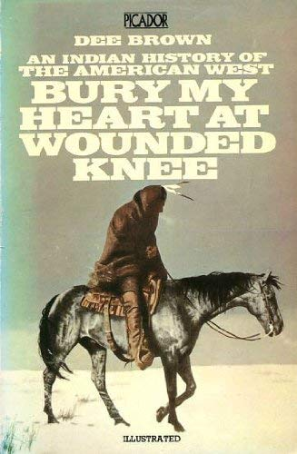
Bury My Heart at Wounded Knee (Dee Brown)
The history of Native Americans is one filled with deep scars and hardships.
This iconic bestseller portrays it well, with the title saying enough: at wounded knee, some Sioux natives were given the false hope of freedom... but were instead massacred in cold blood.
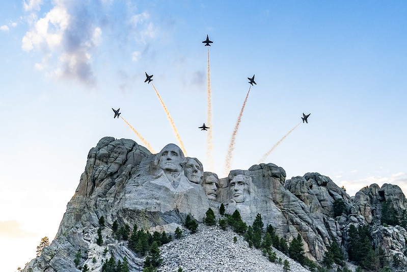
Mount Rushmore carved in a part of The Black Hills
Because of the Sioux' fierce determination in the past, they still have a claim on the Black Hills, which has yet again become highly disputed in today's political climate.
The Black Hills are packed with natural resources and are strategically located. The sioux recently rejected a staggering $1.3 Billion governmental bid to reclaim the Black Hills. To reject such a mile-high amount reflects the natives' deep-rooted aversion against the US government.
Docu about the Pipeline Protest
Up until today, Native Americans are quite cross with the US government: over their current living standards, history and land encroachment.
One high-profile example is the Pipeline protest, and it showcases why Natives feel the US government has still not left them alone, and continues to harass.
The transmountain pipeline is a similar example, but it relates to Canada.
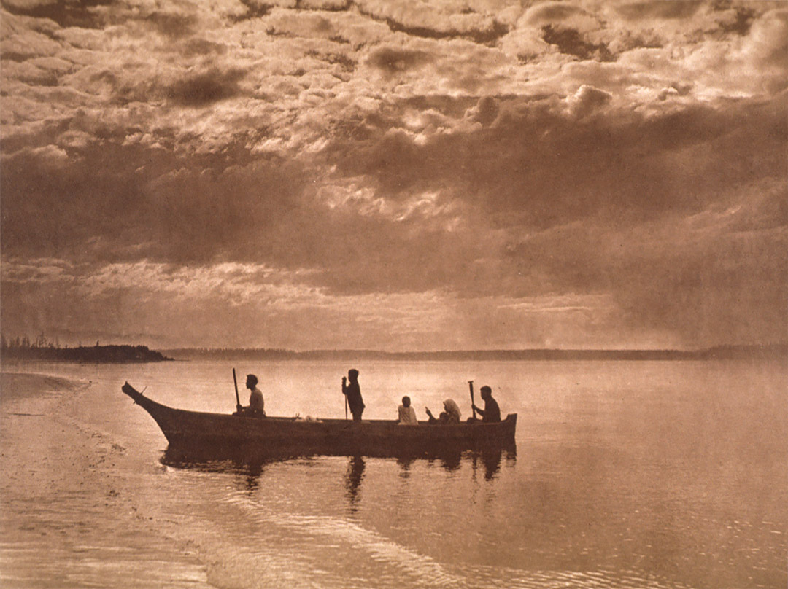
Self-made Canoo
The future and freedom of expression is still unstable for Native Americans.
From the time Edward Curtis photographed the last of a generation untill today, many Native American tribes had to endure quite great suffering and were raised with a sad history in the back of their minds.
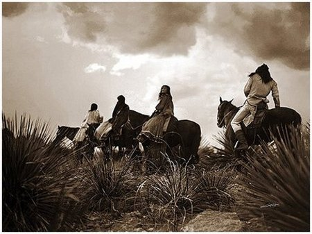
Riders (Curtis)
Unfortunately, there is not a beautiful ending to this visual story, nor that of the Native Americans. So, what rests is a last selection of images by Edward S. Curtis, who portrayed the roots of Native American culture, the last of a generation and the last full-time riders of the plains.
If you want to read more about Curtis, this book is a pure gem; I devoured it myself.
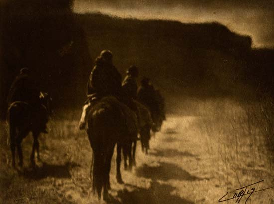
Warriors travelling (Curtis)
A face with much expression (Curtis)
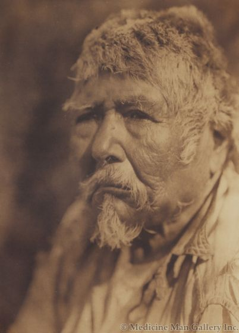
Another face with much expression (Curtis)
A Native American looking proudly across the lands (Curtis)
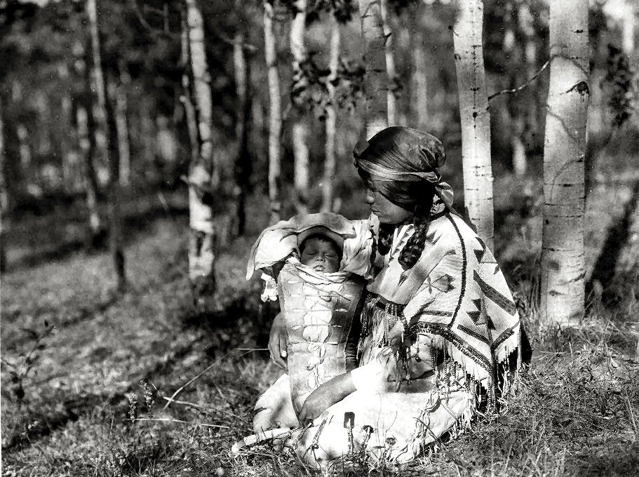
A Child: the future generation (Curtis)
(End of gallery)